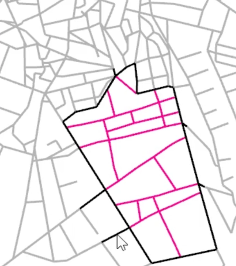

Generates variations of line networks based on existing lines, limiting parameters and a random factor.
Existing lines
A boundary polygon defines, in which area the network will be generated. Initial lines can be supplied and the algorithm grows new lines from or to them.
Limiting parameters
The generation can be controlled by limiting minimum and maximum length as well as the angle in which lines grow. The number of iterations in which new lines are added can be controlled, too. Furthermore topographic data can inform the growth direction.
Random factor
Each time a different random number is supplied, the algorithm produces a different result. This process can be automatised to create a huge range of different results.
A common purpose of creating a line network is the generation of street networks. In connection with Line Segment Network Analysis the performance of the network can be evaluated and by iterating through a range of network variants their performance can be compared.